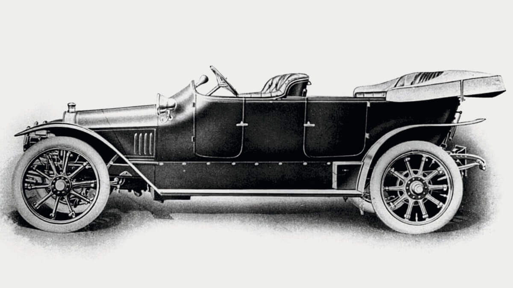
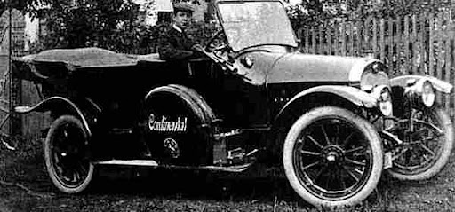
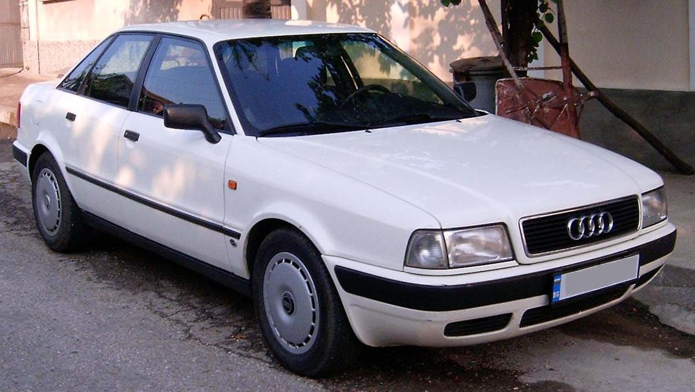
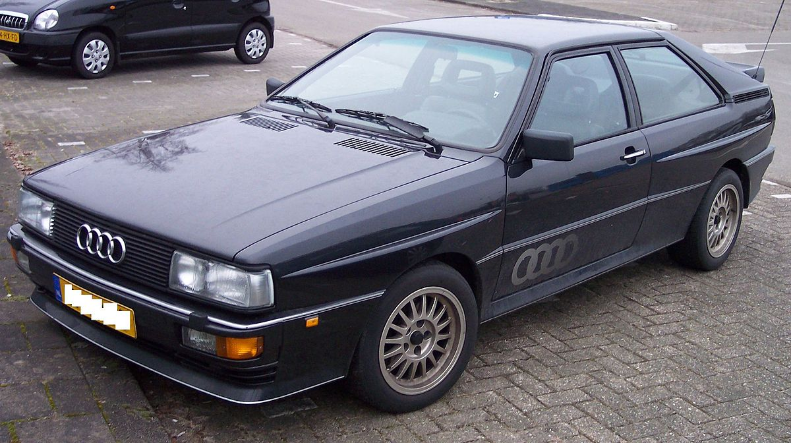

1910 AUDI
Audi Type A (10/22PS) (1910-1912)
Audi'nin ilk seri üretim otomobili olan Type A, 1910-1912 yılları arasında üretildi. Bu model, dönemin standartlarına göre oldukça yenilikçi bir tasarıma sahipti. 4 silindirli, 2.6 litrelik bir motora sahipti ve 22 beygir gücünde idi. Type A, Audi'nin otomobil üretimine başladığı dönemde Almanya'nın Zwickau şehrinde üretildi.
1911 AUDI
Audi Type B (10/28PS) (1911-1912)
Type A'nın geliştirilmiş versiyonu olan Type B, 1911-1912 yılları arasında üretildi. Bu modelde, motor gücü artırılarak 28 beygir gücüne çıkarıldı. Ayrıca, Type B'de Type A'dan farklı olarak birkaç tasarım iyileştirmesi yapıldı.
1966 AUDI
Audi 80 (1966-1996)
1966'dan 1996'ya kadar üretilen Audi 80, şirketin orta sınıf sedan ve station wagon segmentindeki önemli modellerinden biriydi. Audi 80, döneminde güvenilirlik, ekonomi ve sürüş keyfi açısından popülerdi. Ayrıca, sürekli olarak yenilenen ve geliştirilen bir model olarak bilinir.
1980 AUDI
Audi Quattro (1980-1991)
1980-1991 yılları arasında üretilen Quattro, Audi'nin efsanevi dört tekerlekten çekiş sistemiyle ün kazanan spor otomobilidir. Quattro, ralli yarışlarında büyük başarılar elde etmiş ve otomobil endüstrisinde dört tekerlekten çekişin popülerleşmesine önemli katkıda bulunmuştur. İlk olarak turboşarjlı beş silindirli bir motora sahip olan Quattro, performans ve yol tutuşuyla dikkat çekmiştir.
1994 AUDI (A4)
Audi A4 (1994-günümüz)
1994 yılından itibaren üretilen A4, Audi'nin orta sınıf sedan ve station wagon modellerinden biridir. A4, şık tasarımı, yüksek kaliteli iç mekanı ve dinamik sürüş özellikleriyle tanınır. Zamanla sürekli olarak güncellenen ve yenilenen A4, Audi'nin en çok satan ve en tanınmış modellerinden biri haline gelmiştir.
1994 AUDI (A6)
Audi A6 (1994-günümüz)
1994 yılından itibaren üretilen A6, Audi'nin lüks orta sınıf sedan ve station wagon modelidir. A6, yüksek kaliteli malzemelerle inşa edilmiş geniş ve lüks bir iç mekana sahiptir. Ayrıca, güçlü motor seçenekleri ve üstün sürüş özellikleriyle de bilinir. A6, lüks ve performansı bir araya getiren şık bir otomobildir.
1998 AUDI (TT)

Audi TT (1998-2020)
1998-2020 yılları arasında üretilen TT, Audi'nin sportif tasarımı ve kompakt yapısıyla tanınan coupe ve roadster modellerinden biridir. TT, çarpıcı dış tasarımı, premium iç mekanı ve dinamik sürüş özellikleriyle dikkat çeker. İlk olarak coupe olarak tanıtılan TT, daha sonra roadster versiyonuyla da sunulmuştur ve geniş bir hayran kitlesine sahiptir.